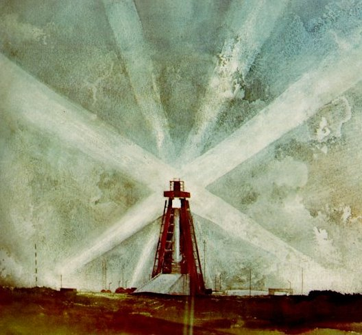
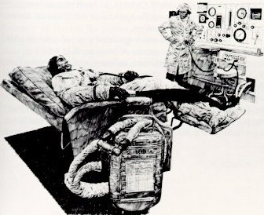
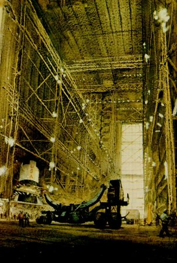

The Apollo requirement was to take off from a point on the surface of the Earth
that was traveling 1000 miles per hour as the Earth rotated, to go into orbit at 18,000
miles an hour, to speed up at the proper time to 25,000 miles an hour, to travel to a
body in space 240,000 miles distant which was itself traveling 2000 miles per hour
relative to the Earth, to go into orbit around this body, and to drop a specialized landing
vehicle to its surface. There men were to make observations and measurements,
collect specimens, leave instruments that would send back data on what was found, and
then repeat much of the outward-bound process to get back home. One such expedition
would not do the job. NASA had to develop a reliable system capable of doing this time
after time.

John W. McCoy II, FIRST LIGHT, watercolor on paper
At the time the decision was made, how to do most of this was not known. But
there were people in NASA, in the Department of Defense, in American universities,
and in American industry who had the basic scientific knowledge and technical
know-how needed to predict realistically that it could be done.

Paul Calle,
TESTING THE SPACESUIT,
pen and ink on paper
Apollo was based on the accumulation of knowledge from years of work in military
and civil aviation, on work done to meet our urgent military needs in rocketry, and
on a basic pattern of cooperation between government, industry, and universities that
had proven successful in NASA's parent organization, the National Advisory Committee
for Aeronautics. The space agency built on and expanded the pattern that had
yielded success in the past.

Nicholas Solovioff,
INSIDE VAB,
watercolor on paper
Systems engineering and systems management were developed to high efficiency.
So was project management. New ways to achieve high reliability in complex machines
were worked out. New ways to conduct nondestructive testing were developed. The best
of large-scale management theory and doctrine was used to bring together both
organizational (or administrative) optimization and join it to responsibility to
work within the constraints of accepted organizational behavior.